| Excel | Formulas Menüsü(Fonksiyonlar) | 6 |
Istatistiki ve Matematiksel Fonksiyonlar
Excelin müthiş bir matematiksel fonksiyon kütüphanesi bulunmaktadır. Tabi biz burada hepsine girmeyeceğiz,
ancak MIS ağırlıklı çalışan kişilerin hedef kitlem olduğunu düşünerek, bize lazım olabilecek
fonksiyonları inceleyemeye
dahil edeceğiz. Bu şu demek, mutlak değer formülü olan ABS tam anlamıyla matematiksel bir
fonksiyon olmakla birlikte zaman zaman biz MIS tarzı işlerde çalışanların da gereksinim duyduğu bir fonksiyon olmaktadır, o yüzden onu burada ele alacağız. Ancak sinüs, cosinüs gibi trigonometrik fonksiyonlar v.s kapsamımız dışında olacaktır.
Bu kategoriyi anlatırken kendi içimde mantıksal alt gruplamalar da yaptım,
alt bölümleri de buna göre oluşturdum.
Bu sayfadaki örneklerin yer aldığı koşullu ve istatistiki fonksiyon
dosyalarını buradan
indirebilirsiniz.
Küsurat, Tamsayı ve Yuvarlama formüller
Bu kısımda küsuratı olan sayılar nasıl ele alınır, ayrıca diğer yuvarlama işlemleri nasıl yapılır, bunlara bakacağız.
| Fonksyion | Syntax | Ne işe yarar |
| TRUNC | TRUNC(sayı;[basamak]) | Sayıyı istenen miktardaki küsurattan kurtarır, yuvarlama yoktur.
Basamak belirtilmezse küsüuratı tamamen kaldırır. |
| INT | INT(sayı) | Sayıyı en yakın aşağı yönlü tam sayıya yuvarlar. Pozitif sayılarda trunc ile aynı görevde. |
| ROUND | ROUND(sayı;basamak) | Belirtilen basamak kadar yuvarlama yapar. Yuvarlamanın yönü yuvarlanacak kısmın 5'in ne kadar altında/üstünde olmasına göre değişir. Basamak parametresi 0 da olabilir, + ve - de. |
| ROUNDDOWN | ROUNDDOWN(sayı;basamak) | Belirtilen basamak kadar aşağı yuvarlama yapar. Basamak parametresi 0 da olabilir, + ve - de. |
| ROUNDUP | ROUNDUP(sayı;basamak) | Belirtilen basamak kadar yukarı yuvarlama yapar. Basamak parametresi 0 da olabilir, + ve - de. |
| MROUND | MROUND (SAYI;ÇARPAN) | Sayıyı, belirtilen çarpanın en yakın katına yuvarlar.
Sadece pozitif sayılarda çalışır. |
| CEILING | CEILING(sayı,[hassasiyet]) | Sayıyı, belirtilen çarpanın en yakın YUKARI katına yuvarlar |
| CEILING.MATH | CEILING.MATH(sayı,[hassasiyet],[mode]) | Sayıyı, belirtilen çarpanın en yakın YUKARI katına yuvarlar. Excel 2013le geldi. Mode parametresi, negatif sayılar için |
| FLOOR | FLOOR(sayı,[hassasiyet]) | Sayıyı, belirtilen çarpanın en yakın AŞAĞI katına yuvarlar |
| FLOOR.MATH | FLOOR.MATH(sayı,[hassasiyet],[mode]) | Sayıyı, belirtilen çarpanın en yakın AŞAĞI katına yuvarlar. Excel 2013le geldi. Mode parametresi, negatif sayılar için |
| EVEN | EVEN(sayı) | Pozitif sayıları, kendinden en büyük
çift sayıya yuvarlar. Negatifleri aşağıya |
| ODD | ODD(sayı) | Pozitif sayıları, kendinden en büyük tek
sayıya yuvarlar. Negatifleri aşağıya |
Aşağıdaki çeşitli örnekleri inceleyelim
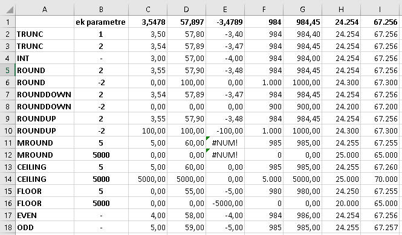
Örnek dosyayı
buradan indirebilrsiniz.
Burada özellikle MROUND ve CEILING farkına değinmekte fayda var. MROUND,
en yakın kata(yukarı veya aşağıda) yuvarlarken, CEILING yukarı yönlü
yuvarlar. Bu durumda 67.256 sayısının 5.000'in katı şeklinde yuvarlarken
MROUND en yakın kat olarak 65.000'e veya 70.000'e yuvarlama konusunda seçim
yapmalıdır. 65.000, 2.256 birim uzaklıkta iken 70.000, 2.754 birim
uzaklıktadır, o yüzden 65.000e yuvarlar. CEILING ise hep yukar yuvarladığı
için 70.000e yuvarlar.
Grup(Aggregate) Fonksiyonları
Toplamlar
SUM: Belirli bir alandaki sayıları
toplar. Başlangıç noktası ile bitiş noktası arasında ":" işareti olur.
Birbirine komşu olmayan alanları toplamak için aralara ";" konur. Parametre
olarak sabit değer de girilebilir.
=SUM(A1:A5)
=SUM(J4:J10;K4:K6;10) //komşu olmayan ve sabit parametre
Filtrelenmiş alanlarda SUM formülünü yazarsanız aradaki gizlenmiş
değerler de sonuca dahil olur. Sadece filtreli grubun toplamını almak için
SUBTOTAL fonksiyonunu kullanmanız gerekir.
Yoksa aşağıdaki gibi sorun yaşarsınız. 486.satırın formülünde şu
yazmaktadır.
=SUM(D277:D346)

Gerçi bazı şanslı durumlarda filtreli alan sıralı olabilir, o yüzden
formülü yazdığınızda ilgili alanda arada filtrelenmiş satır bulunmaz. O zaman şansınız
yaver gidebilr.
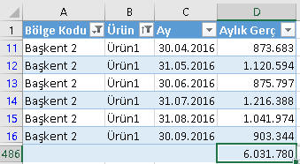
Formülümüz şudur:
=SUM(D11:D16)
Siz siz olunuz, işinizi şansa bırakmayın, filtreli alanlarda her zaman
SUBTOTAL kullanmaya çlışın.
Adetler
Aşağıdaki hücre grubunda çeşitli sayma işlemleri yapalım.
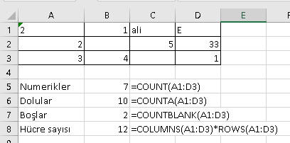
COUNT: Bir alandaki sayısal değer içeren
hücreleri sayar.
COUNTA: Bir alandaki dolu hücreleri
sayar.
COUNTBLANK: Bir aladaki boş hücreleri
sayar.
Bir alandaki toplam hücreyi saydıran bir fonksiyon olmamakla birlikte,
aşağıdaki formülle dolaylı yoldan saydırabiliriz. Satır ve sütundan oluşan
bir karenin alanını hesaplıyoruz aslında.
=COLUMNS(J13:M15)*ROWS(J13:M15)
Diğer
PRODUCT: Belirli bir alandaki değerleri
birbiryle çarpar. 10 parametreden oluşan bir katsayıyı tek tek çarpmak
yerine bunu kullanmak pratiktir.
=A2*B2*C2*D2*E2*F2*G2*H2*I2*J2
//bunun yerine
=PRODUCT(A2:J2)
Bunun SUM ile birleşmiş hali olan SUMPRODUCT'a
buradan
ulaşabilirsniz.
SUBTOTAL:Filtrelenemiş listelerde sadece
filtreli verinin toplamını(veya diğer gruplanmış fonksiyon sonucnu) verir.
Evet, yanlış okumadınız, fonksiyonun adı her ne kadar SUBTOTAL olsa da alt
toplam almaktan başka işler de yapar. Filtreli gurubn ortalamasını,
maksimumunu v.s de alır. Zaten aşağıdaki resimde göründüğü gibi "("
karakterine basınca hemen parametre listesi ortaya çıkar. Mesela 1, ilgniç bir
şekilde Toplam aldırmaya değil, ortalamayı veriyor. Toplam için 9 seçeneği
seçilmelidir.
Bu arada filtrelenmiş alanların hemen altındayken menüden Σ(Toplam) işaretine
basılınca otomatikman SUBTOTAL(9;....) şeklinde bir formül oluşur.
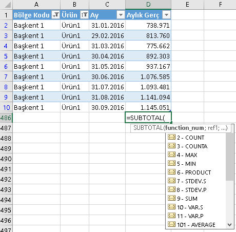
Yukarıdaki gibi bir listede sık sık bölge ve ürün değiştirerek
diptoplamın ne olacığı görülmek istenirse iki tane
Slicer konarak bu
iş halledilir.
NOT:Bu formül, Data Menüsündeki SUBTOTAL aracında da kulanılan formül
olup, oradaki kullanımına buradan
ulaşabilirsinz.
AVERAGE:Belirli bir alandaki hücre
grubunun ortalamasını verir. Yanlız dikkat edilmesi gereken bir nokta var. Bu
fonksiyon, boş değerleri dikkate almaz. 10 hücre varsa ve 9u doluysa toplamı
9a bölererk ortalama hesaplar,10'a değil.
Mesela, satışçıların 12 aylık
ortalama satış rakamını alırken bazı satışçlar bazı aylar hiç satış yapmamışsa veri
kaynağında burası boş da gelebilir 0 da. Boş gelme durumu daha çok tabular
formdaki bir listenin pivot table yapılması sırasında oluşacaktır(Eğer ki
özellikle "boş hücreler 0 görünsün" işaretlemesi yapılmadıysa)
Yukarıdaki örnekte 0 yerine boş gelirse hatalı bir ortalama hesaplanabilir, zira onların 0
olarak işleme girmesi gereklidir. Ama bazı durumlarda gerçekten boş
hücrelerin ortalama hesabına dahil olmaması istenebilir. Mesela kişinin uzun
süreli bir hastalığı olduysa o dönemlerin boş geçilerek ortalamaya dahil
olmaması ve ortalamayı düşrüşmemesi gerekir.
Mesela aşağıdaki tabloda ilk satırın ortalaması 115 olurken ikincisi 138
olacaktır.
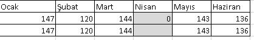
En küçük ve En büyükler
MIN: Bir alandaki değerlerin en küçüğünü
verir. Sabit değerler de parametre oalrak girilebilir ve birbirlerinden ";"
ile ayrılır.
MAX: Bir alandaki değerlerin en büyüğünü
verir. MIN'deki açıklamalar geçerli.
MIN ve MAX'ın söylemimize ters bir şekilde işlediğini bilmek önemlidir. Mesela
bir hesabın sonucunda çıkan değer en az 100 olsun denirse, bunun için MIN
değil MAX kullanılmalıdır. Mesela, A5*B5 formülünün sonucu 67 çıktıysa, bunu 100
yapmak için formülümüz şöyle olmalı
=MAX(A5*B5;100) //67 VE 100'den hangisi büyükse onu alır, yani 100ü
Keza bir hesabın sonucunun en çok 100 çıkması istniyorsa
da MAX değil MIN kullanılmalıdır. A5*B5 180 çıkıyorsa formülümüz şöyle
olmalıdır:
=MIN(A5*B5;100) //100
MIN ve MAX'ın bir diğer kullanımı da basit IF'li yapılara
alternatiftir. Yani A1'in
değeri 10'dan büyükse 10 olsun, yoksa A1 olsun demek istediğimiz birçok kişi
şöyle yazar:
=IF(A1>10;10;A1) //A1 3'se sonuç 3, 15se 10
//bunun yerine daha kısa olan şu fomrülü deneyin
=MIN(A1;10)
SMALL(dizi;n): Bir grup sayı içinde en
küçük n. sayıyı verir.
Sayılar, bir alandaki hücreler olabileceği gibi, bir dizi sonucu da
olabilir.
=SMALL(A1:A10;3)
=SMALL({10;75;30;254;20};2) //20
LARGE(dizi;n):SMALL'daki açıklamalar
aynen geçerli olup, en büyük n.elemanı döndürür.
SMALL ve LARGE'ın
dizi
formüllerinde kullanımı da oldukça yaygındır. O sayfayı da incelemenizi
tavsiye ederim.
Uç değerler hariç ortalama
Aşağıdaki formülle, belli bir kümedeki en küçük/büyük 1 değer hariç
ortalama alınır. Zira belli ki mart ayında tek seferlik yüksek bir satış
olmuş, Ekimde de büyük çaplı bir sorun olduğu için satışlar düşük gitmiş.
Ortalamayı hesaplarken bunları hariç tutmakta fayda var.
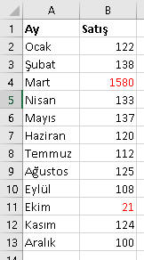
=(SUM(B2:B13)-MIN(B2:B13)-MAX(B2:B13))/10
//veya
=(SUM(B2:B13)-SMALL(B2:B13;1)-LARGE(B2:B13;1))/10
Bu formülde sabit bir değer olan 10'a böldük çünkü hem alttan hem üstten 1'er
uç değeri çıkardık, geriye 10 ay kaldığını biliyoruz, ancak burası ay yerine
sayısı sürekli değişebilen bir küme olsaydı 10 yerine (COUNT(B2:B13)-2)
girebilirdik.
Peki, ya uç değer olarak ikişer tane yani toplamda 4 değeri hariç tutmak
isteseydik nasıl yapardık? Formülü biraz uzatmamız gerekirdi:
=(SUM(B2:B13)-SMALL(B2:B13;1)-SMALL(B2:B13;2)-LARGE(B2:B13;1)-LARGE(B2:B13;2))/8
Peki ya 3,4 v.s uç değer hariç tutmak istesek? Tabiki yukarıdaki 12
adetlik kümede teknik olarak en fazla 5 uç değer hariç tutulabilir. Ama
mesela 100 adetlik kümelerde uçlardan 5'er tane yani toplamda 10 tane değeri
hariç tutup kalan 90 adedin ortalamasını almak istesek nasıl yapardık? Tek
tek 5 tane SMALL 5 tane de LARGE formülü yazacak değiliz, değil mi? Bunun
için
dizi formüllerini kullanacağız. Onu ilgili bölümde göreceğiz. Ancak dizi
formülünün kullanımı da karışık gelirse aşağıdaki gibi bir UDF de
kullanabilirsiniz.
Uçhariçortalama ortalama
Function uçhariçort(alan As Range, Uç As Variant)
Dim aratoplam As Double
Dim enbüyükler As Double
Dim enküçükler As Double
For i = 1 To Uç
enbüyükler = enbüyükler + WorksheetFunction.Large(alan, i)
Next i
For i = 1 To Uç
enküçkler = enküçkler + WorksheetFunction.Small(alan, i)
Next i
aratoplam = WorksheetFunction.Sum(alan) - enbüyükler - enküçkler
uçhariçort = aratoplam / (alan.Count - Uç * 2)
End Function
Koşullu Fonksiyonlar
Bu bölümde bir veye birden çok koşul olması durumunda elimizdeki SUM, COUNT
gibi formüllerin koşullu türevlerini kullanmayı öğreneceğiz.
Türevi olan fonksiyonlar sözkonusu olduğunda bazen SUM'da olduğu gibi hem tek koşul(SUMIF) hem çok koşul için(SUMIFS) türev fonksiyon görebilirken, bazılarında ise sadece tek koşul türevi(AVERAGEIF
gibi) görülebilmektedir.(2016 versiyonunda AVERAGEIFS eklenmiştir.) Bununla
birlikte bazılarının(MAX) ise tek koşullu biçimi(MAXIF) atlanarak doğrudan çok
koşullu(MAXIFS) versiyonları sunulmuştur.
Bazılarında ise an itibarıyle türev fonksiyon hiç bulunmamaktadır.
RANK için ne RANKIF ne de RANKIFS mevcuttur.
Bunlar için alternatif yöntemleri deneyeceğiz.
Şimdi tek bir SUMIF ve SUMIFS örneğini burada inceleyelim. Diğerleri ise (COUNTIF,COUNTIFS,MINIFS,MAXIFS,AVERAGEIF,AVERAGEIFS)
bu ikisinin benzer kullanımına sahip olacak, onları bu
dosyayı
indirip inceleyebilirsiniz.
Tek koşullu foksiyonların genel syntaxı şöyle:XXXIF(arama
alanı,aranan,hesaplanacak kolon)
Çok koşullularda ise en başta hesaplanacak kolon olur, sonrasında ise
"arama kolonu-aranan değer" çiftleri girilir. XXXIFS(hesaplanacak
kolon,arama alanı1,aranan1,arama alanı2,aranan2,.....)
COUNTIF ve COUNTIFS'te hesaplama kolonu olmadığı için onları bu
genellemeden ayırabiliriz. Onun dışındaki kullanımları aynıdır, sadece
hesaplama kolonu seçilmez.
Kolon parametreleri tüm kolon(A:A), belli bir alan(A2:A100), bir table
kolonu(Ör:Table1[Bölge]) veya bir Name(Ör:Bölgeler) olabilir.
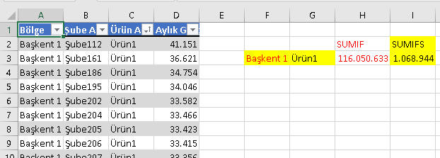
=SUMIF(Table1[Bölge];G3;Table1[Aylık Gerç])
=SUMIFS(D:D;A:A;F3;C:C;G3)
Yukarıda belirttiğim gibi diğer koşulu fonksiyonları indirdiğiniz dosyadan
inceleyebilrisiniz. Excel 2016da gelen fonksiyonları, daha eski sürüm
Excel'i olanların kullanabilmesi için alternatif çözüm olarak dizi
formüllerini önereceğiz. Onlara
buradan
bakabilirsiniz.
Bunlar için ayrıca UDF de yazılabilir. Aşağıdaki özelif isimli UDF'imi
görebilirsiniz.
Özel if
Function özelif(İşlem As String, BakılacakAlan As Range, kriter As Variant, İşlemAlan As Range)
'işlem yerine, MAX, MIN, MEDIAN gibi aggreagete fonksiyonları yazılır
On Error GoTo hata
Dim aynıwb As Boolean, aynıws As Boolean
Dim strx As String
aynıwb = IIf(BakılacakAlan.Parent.Parent.Name = ActiveWorkbook.Name, True, False)
aynıws = IIf(BakılacakAlan.Parent.Name = ActiveSheet.Name, True, False)
If aynıwb Then
If aynıws Then
If IsNumeric(kriter) Then
strx = İşlem & "(IF(" & BakılacakAlan.Address & "=" & kriter & "," & İşlemAlan.Address & "))"
Else
strx = İşlem & "(IF(" & BakılacakAlan.Address & "=""" & kriter & """," & İşlemAlan.Address & "))"
End If
'strx = "SumProduct(Max((" & BakılacakAlan.Address & "=""" & kriter & """)*(" & MaxAlan.Address & ")))"
Else
If IsNumeric(kriter) Then
strx = İşlem & "(IF(" & "'" & BakılacakAlan.Parent.Name & "'!" & BakılacakAlan.Address & "=" & kriter & "," & "'" & BakılacakAlan.Parent.Name & "'!" & İşlemAlan.Address & "))"
Else
strx = İşlem & "(IF(" & "'" & BakılacakAlan.Parent.Name & "'!" & BakılacakAlan.Address & "=""" & kriter & """," & "'" & BakılacakAlan.Parent.Name & "'!" & İşlemAlan.Address & "))"
End If
End If
Else
If IsNumeric(kriter) Then
strx = İşlem & "(IF(" & "'[" & BakılacakAlan.Parent.Parent.Name & "]" & BakılacakAlan.Parent.Name & "'!" & BakılacakAlan.Address & "=" & kriter & "," & "'[" & BakılacakAlan.Parent.Parent.Name & "]" & BakılacakAlan.Parent.Name & "'!" & İşlemAlan.Address & "))"
Else
strx = İşlem & "(IF(" & "'[" & BakılacakAlan.Parent.Parent.Name & "]" & BakılacakAlan.Parent.Name & "'!" & BakılacakAlan.Address & "=""" & kriter & """," & "'[" & BakılacakAlan.Parent.Parent.Name & "]" & BakılacakAlan.Parent.Name & "'!" & İşlemAlan.Address & "))"
End If
End If
özelif = Evaluate(strx)
Exit Function
hata:
özelif = "hata"
End Function
Kullanımı da aşağıdaki gibi olup, MAXIF görevi görmektedir. A2:A10'da D1'deki değeri arayıp,
eşleşen satırlar için B2:B10'daki MAX değeri döndürür. Excel 2007de SUMIF ve AVERAGEIF geldiği için
sadece MAXIF ve MINIF amacıyla kullanılabilir.(Excel 2016'da MAXIFS ve MINIFS geldiği için gereksiz hale gelmiştir.)
=özelif("MAX";A2:A10;D1;B2:B10)
Kombine kriterler
Bazı kriterler sabit bir rakam(veya hücre) olmaktan ziyade < veya >
işaretlerinden oluşur. Böyle durumlarda kriter tırnak içine alınır. Eğer
işaretten sonraki değer bir hücreden gelecekse bu da & işaretiyle
birleştirilir.
=SUMIFS(A:A;B:B;K2;C:C;">="&L2)
=COUNTIFS(A:A;K2;C:C;"<10")
COUNTIFS'in gruplu sıralamadaki(RANKIFS amaçlı) kullanımı
RANK
Öncelikle RANK fonsiyouna bakalım. RANK
fonksiyonu, belirli bir gruptaki sayıların büyüklük sırasını verir.
Syntax'ı şöyledir. RANK(sayı, hücre grubu;[sıralama yönü])
Sıralama yönü parametresi verilmez veya 0 girilirse büyükten küçüğe göre
sırayı verir, yani en büyük rakamın sırası 1 olur. Bu parametre 1 girilirse
en küçük rakamın sırası 1 olur.
NOT:Bu fonksiyon 2010'da yerini RANK.EQ'ya bırakmıştır ancak geriye dönük
uyumluluk nedeniyle hala kullanılmaktadır. Gördüğünüz gibi hem RANK hem
RANK.EQ aynı değere sahip sayılara aynı sırayı verir. 2010'la bir de
RANK.AVG
geldi, bu ise aynı değere sahiplere buçuklu bir sıra verir.
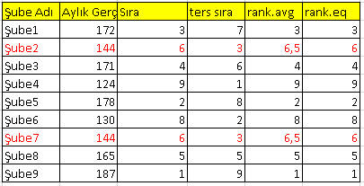
RANKIFS
İlginçtir ki, RANK'ın yukardaki diğer fonksiyonlar gibi koşullu versiyonu
yoktur. Ancak biz alternatif yöntemlerle bu amaca hizmet eden formüller
yazabiliyoruz. Şimdi yukarıdaki görüntüde E kolonuna şu formülü yazdığımızda
bu bize, her bölgenin her üründeki şube sırasını verecektir.
=COUNTIFS(A:A;A2;C:C;C2;D:D;">"&D2)+1
Formülün mantığı şöyle: Başkent bölgesinde Ürün1'de kendisinin değerinden
büyük kaç şube var. En büyük değer için bu 0 çıkacaktır, çünkü ondan daha
büyük rakamı olan şube yoktur. Sonuca 1 ekleyerek nihai sırayı buluyoruz.
Bir diğer yöntem de aşağıdaki gibi bir UDF yazmak olacaktır.
Rankif için tıklayın
Function rankifs(ParamArray kriterler())
On Error GoTo hata
Dim i As Integer
Dim formül As String
Dim str As String
If (UBound(kriterler) + 1) Mod 2 <> 0 Then
rankifs = "Eksik Parametre. Kriter ve alan sayıları çiftler halinde girilmelidir"
Exit Function
End If
For i = LBound(kriterler) To UBound(kriterler)
If i = UBound(kriterler) Then
formül = formül & """>""" & "&" & kriterler(i)
Else
If i Mod 2 = 0 Then
formül = formül & kriterler(i).Address & ","
Else
formül = formül & """" & kriterler(i) & """" & ","
End If
'formül = formül & IIf(i Mod 2 = 0, kriterler(i).Address, """" & kriterler(i) & """") & ";"
End If
Next i
str = "=COUNTIFS(" & formül & ")"
rankifs = Evaluate(str) + 1
Exit Function
hata:
rankifs = Err.Description
End Function
Aynı kolon için çok kriter belirtmek
Koşullu kriterleri genelde tek bir kolonda tek bir değeri aramak için
kullanırız ancak bazen birden çok değeri de aramamız gereken durumlar
olacaktır. Bunun için bu konuda göstereceğimiz iki yöntem olacak, diğer
yöntemleri ise
dizi
formüllleri sayfasında göreceğiz.
İlk yöntemimiz ilgili kriter kadar SUMIF'i yanyana yazıp toplamaktır. Bu
yöntem çok sayıda kriter olması durumunda çok pratik olmayacaktır. İkinci
yöntem ise SUM ve SUMIF'i beraber kullanmaktır. Kriterler süslü parantez
içine yazılır.
=SUMIF(Table1[Bölge];"Başkent 1";Table1[Aylık Gerç])+SUMIF(Table1[Bölge];"Başkent 2";Table1[Aylık Gerç])
=SUM(SUMIF(Table1[Bölge];{"Başkent 1";"Başkent 2"};Table1[Aylık Gerç]))
İstatistiki Fonksiyonlar
Aşağıda bu fonksiyonların nerede ve ne zaman
kullanabilecğeinize ait bilgiler bulunmakta olup, detay kullanımlarını bu
dosyayı
indirirek görebilirsiniz. Bunları ayrıca Data menüsündeki
Data Analysis eklentisi ile de
formülsüz şekilde elde edebilirsiniz.
MEDIAN:Bir grup sayının en ortasındaki
değeri verir. Ortalamayı aşırı saptıran değerlerin olduğu bir kümede AVERAGE
ile ortalama almak yerine MEDIAN da kullanılabilir. Ortalamayı saptıran
değerlerin sayısı 1-2'den fazla değilse yukarıdaki gibi "uç değerler hariç
ortalama"yı hesaplayan formül de kullanılabilir ama MEDIAN kullanımı daha
basittir.
STDEV:Standart sapmayı verir. Bunun
çeşitli türevleri var, eminim incelemeye değerdir ancak ben burada kendi
dünyamda kullandığım örneği vereceğim. Ben, standart sapmanın kendisinden
ziyade bunun ortalamaya bölümünü kullanıyorum. Bu oran bize bir gruptaki
dalgalanma/sapma
oranını verecektir.
Diyelim bir banka şubesindeki 4 satış temsilcisindeki müşteri sayıları
sırayla 880, 770, 910 ve 840 olsun. Bunların müşteri sayılarında aşırı bi
dalglanma olmadığını söylemek hemen mümkündür, bunun matematiksel ifadesi
ise şöyledir.
=STDEV.P(B2:E2)/AVERAGE(B2:E2)
Tüm listeye bu formülü uyguladığımızda tek çırpıda sırıtanları hemen
görebiliriz. Burada sabit bir sınır olmamakla birlikte duruma göre %20/%30
un üstündekilere sapma var gözüyle bakabilirsiniz. Bu tamamen sizin
hassasiyet derecenize bağlı. Ör:"Ben her ay 3 şubede yeniden müşteri
dağıtımı yaparım" derseniz bu örnekte Şube2, Şube6 ve belki bir de Şube12de
işlem yapabilirsiniz.
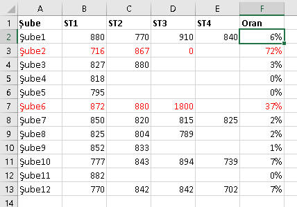
MODE/FREQUENCY:MODE, bize belirli bir
grupta en çok tekrar eden elemanı verirken, FREQUENCY belirli bir aralıktaki
değerlerin ilgili kümede kaç kez geçtiğini söyler. MODE'la bulunan değerin
kaç kez geçtiğini ise COUNTIF içine sarmalayarak bulabilirsiniz.
En çok tekrar eden değerin birden fazla olduğu durumlar için MODE.MULT
fonksiyonu devreye sokulmuştur. MODE.SNGL ise MODE'un yerini almıştır, ancak
geriye uyumluluk adına MODE da hala varlığını korumaktadır.
A2:A18 arasındaki değerlerin
15;15;17;19;20;22;23;23;24;25;25;25;25;26;26;26;29;32 olduğu bir örnekte
formüllerimiz şöyledir
=MODE.SNGL(A2:A18)
=COUNTIF(A:A;MODE.SNGL(A:A)) //kaç kez geçiyor
Belirli aralıklardaki baremlerden oluşan bir grupta frekans değerlerini
elde etmek için FREQUENCY'yi
dizi
formülü şeklinde uygularız. Bu formül bizi uzun bir COUNTIFS yazmaktan
kurtarmaktadır.(Bütün bunları
Data Analysis aracındaki histogram
ile de yapabiliyoruz)
Aşağıdaki Frequency kolonundaki formül ile onun yanındaki kolonun en
altındaki commentboxlı hücredeki formül aşağıdaki gibidir. Detaylara örnek
dosyadan ulaşabilirsiniz.
{=FREQUENCY($A$2:$A$19;D8:D11)}
=COUNTIFS(A:A;"<="&D12;A:A;">="&C12)
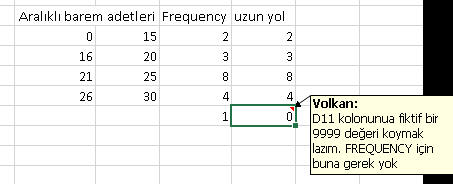
FREQUENCY fonksiyonu dizi formülü şeklinde kullanıldığında bir değerin
sonraki tekrarlarını 0 adet gösterir. Bunun detaylarına
dizi
formüllerinde değineceğiz.
NOT:MODE fonksiyonu sadece sayılar için çalışmaktadır. Metinsel ifadelerden
hangisinin en çok ve kaç kez geçtiğini bulmak için yine
dizi
formüllerini kullanırız.(Bu dizi formülleri de artık çok olmaya
başladı!!)
NORM.DIST:Bir kümedeki verilerin normal
dağılım gösterip göstermediğni belirlemenin yollarından biri, dağılımın
grafiğini çizmek ve bunu yorumlamaktır. Dağılım grafiğini çizmek için
bunları çizime uygun hale getirmek ve sonra Scatter türündeki grafik ile
çizmek gerekir.
Aşağıdaki gibi, şubelere verilen hedeflerin normal dağılıma uygun olup
olmadığını görmek için C kolonunda şu formülü yazarak grafik değerlerini
elde ettik. Gördüğünüügibi grafik değerelerinde kümenin ortalama ve standart
sapma değerlerini de kullanıyoruz.
=NORM.DIST(B2;$E$2;$F$2;FALSE)
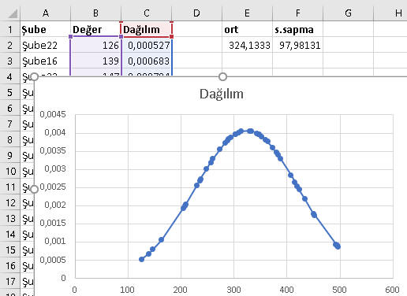
KURT/SKEW:Bir kümedeki verilerin normal
dağılım gösterip göstermediğini belirlemenin bir diğer yolu da basıklık ve
çarpıklık katsayılarına bakmaktır. Çarpıklık(skewness) normal dağılımda
0'dır. Sonuç negatifse dağılım sağa çarğık, pozitifse sola çarpıktır.
Basıklık(kurtosis) normal dağlımda 0'dır; negatifse basık bir dağılım,
pozitifse sivri bir dağılım sözkonusudur.
Dağılımın normal dağılımdan manidar düzeyde farklılaşmadığını söylemek
için sonuçların iki fonkisyon için de -1 ve +1 arasında olması
gerekmektedir. Bu değerleri yine
Data Analysis eklentisinden
topluca görebiliyoruz.
Yukardaki normal dağılım örneğindeki kümeye uyguladığımızda bu sonuçların
da normal dağılıma uyduğunu görmüş bulunuyoruz.
=KURT(B2:B46) //-0,63
=SKEW(B2:B46) /-0,08
CORREL: İki veri kümesinin birbiriyle
ilintili olup olmadığını gösterir. Örnek olarak, banka şubelerinin
hedeflemesinde kullanılacak input listesine bakabiliriz. Mesela Ürün1
kalemine ait bir hedefleme yapacağız diyelim, bu kalemin inputu olarak
elimizdeki diğer ürünlerden hangilerini kullanabiliriz sorusunun cevabını
arıyoruz. Aşağıdaki görüleceği üzere Ürün1 ve Ürün2 oldukça korele yani
ilintili. Yani bir şube ne kadar Ürün2 satıyorsa Ürün1'i satma oranı, diğer
şubelerde de benzerlik gösteriyor. Ürün3 ve Ürün4'ün ise Ürün1 rakamlarıyla
tüm şubelerde benzer bir orana sahip olmadığını yani birbirleriyle alakalı
olmadığını görüyoruz. Dolayısıyla hedeflemeye input olarak sadce Ürün1 dahil
edilmelidir.
=CORREL($B$2:$B$18;C2:C18)
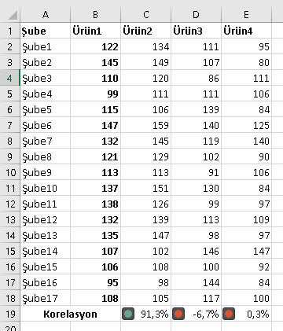
TAHMİNLEMELER:
Excel bize oldukça fazla sayıda istatistiki tahminleme aracı sunuyor ama
biz burada kısaca iki tanesine bakacağız. Yine tabiki ilgilenenler
Data Analysis eklentisini
inceleyebilirler. Gerçi bu linkte de çok yeterli bilgil bulamayabilirsiniz,
ben bu sitenin kapsamında olmadığı için çok detayalara girmiyorum, arzu
edenler başka kaynaklara da bakabilir.
FORECAST(yeni x, bilinen y'ler, bilinen
x'ler): Geçmiş dönem satışlarını bidiğiniz durumlarda önümüzdeki dönem
satışlarının ne olacağını tahmin etmek istediğiniz dönemlerde bu fonksiyonu
kullanırız.
=FORECAST(E$1;$B$2:$B$18;$A$2:$A$18)
Bunun bir de sezonsallık etkisini dikkate aldığı versiyonu da var. O da
şöyle olup detayı örnek dosyada inceleyebilirsiniz.
=FORECAST.ETS(E$1;$B$2:$B$18;$A$2:$A$18)
Bir de benzer sonucu veeren ve kullanımı daha kolay ola
TREND fonsiyonu var. FORECAST'tan farkı,
bunu dizi formülü olarak da kullanbilmeniz. Ancak bunun yerine FORECAST'ı
sağa doğru kaydırarak da ayn sonucu elde edebilirsiniz. Başka farkları da
var ancak bunun için istatistiki terminiolojiye daha aşina olmak gerekir.
=TREND(B2:B18;A2:A18;E1:Q1) //dizi formülü olarak girilmeli
//veya
=TREND($B$2:$B$18)
Diğer Fonksiyonlar
ABS(sayı):Sayıların mutlak değerini
verir.
=ABS(-10) //10
Gelir ve giderin(negatif olarak gösterildiğini varsayalım) bir arada olduğu
bir veri kümesinde sıralama yapmak istediğinizde negatifler en alta gitmesin
diye önce bunların mutlak değerini almak isteyebilirsiniz.
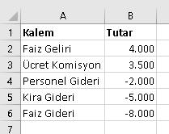
Mutlak değer alıp sıralarsak durum şöyle olur.
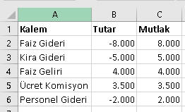
Burdan da görülür ki dikkate alınacak en önemli kalem Faiz
Gideri.(Tabi listenin daha kalabalık olduğunu düşünürsek ABS'nin etkisi
daha anlaşılır olacaktır)
ABS'nin bir diğer önemli kullanımı da başlangıç noktası negatif olan
bir noktadan pozitif olan bitiş noktasına olan değişim oranıdır. Mesela
bir şube geçen sene 100(A2) lira zarar ediyor ve bu sene 50(B2) lira kar
ediyorsa geçen seneye göre olan değişimi şöyle hesaplanır.
=(B2-A2)/ABS(A2) //%150
//klasik formüle hesaplasaydık aşağıdaki gibi hatalı olurdu
=(B2-A2)/A2 //-%150
RAND(), RANDBETWEEN(ilk,son):RAND 0-1
arası rasgele sayı üretirken, RANDBETWEEN iki sayı arasında rasgele bir sayı üretir.
RAND özellikle rasgele olasılık değeri üretmekte kulanılabilir.
RANDBETWEEN'i ise genelde örnek sayı kümeleri oluşturmakta kullanıyorum.
Mesela bu siteyi hazırlarken oluşturduğum örnek dosyalardaki rakamlarda hep bu
fonksiyonun izi var.
=RAND() //Mesela 0,25734
=RANDBETWEEN(10;20) //Mesela 12
SIGN(sayı):Sayı pozitifse 1, negatifse
-1, 0'sa 0 üretir. Bunun da dizi formüllerinde güzel bir kullanım örneği
var. Yer yer belirttiğim gibi hiçbirşey için özellikle bu sitede anlatılan
konular için "benim işime yaramaz" demeyin. Ben zaten buraya 20 yıl boyunca
bir şekilde kullandığım şeyleri koydum. SIGN da bunlardan biri.
TEST SORULARI
Son Sorumuz şuymuş:Bir metindeki tüm noktaları yoketmek istiyorsunuz. Hangi fonksiyonu kullanırdınız?
Soru:
A şıkkı:
B şıkkı:
C şıkkı:
D şıkkı:
Doğru Cevap
Etiketler
İlişkili konuyu seç
141310
Label
* Sorulara verilen yanlış cevaplardaki esprili yorumlarım için hoşgörünüze sığınıyorum.
* Test ve Ödevlerdeki bazı detaylar burada anlatılmamış olabilir. Bunları kendiniz araştırıp bulmalısınız.
* Birden çok konuya ait içeriği olan ödevler var. Algoritmik açıdan bakıldığında o an en uygun konuya adreslenmiştir.
Dikkat! Bir soruya cevap verdikten sonra geri dönemezsiniz.